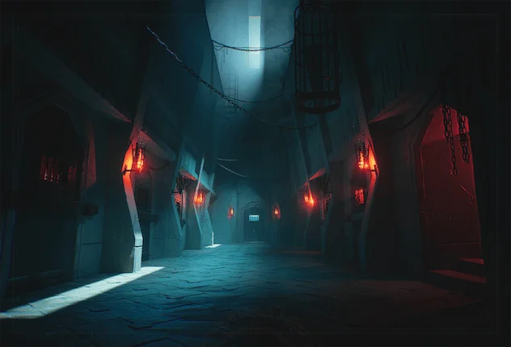
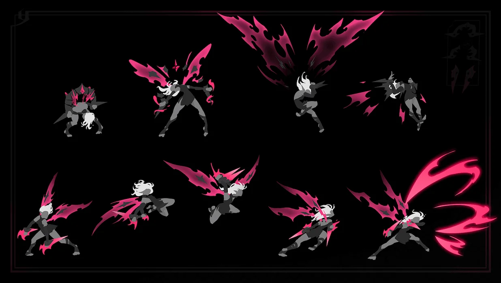
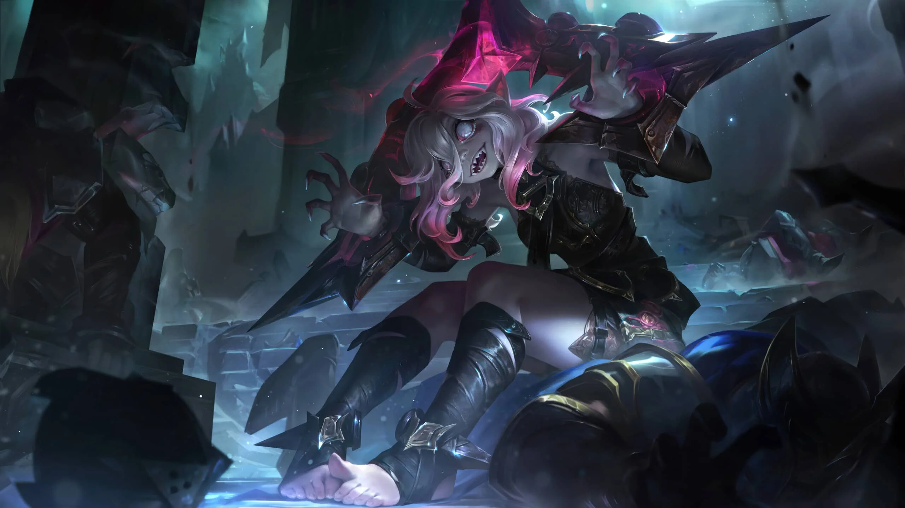
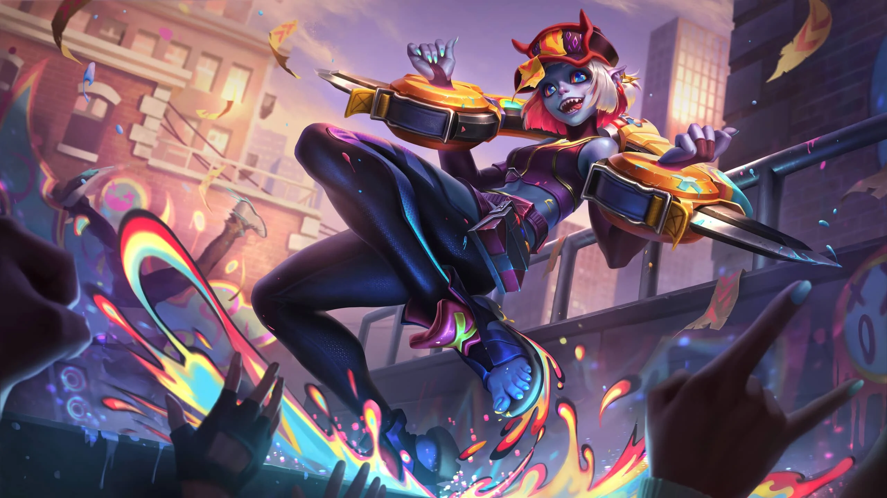
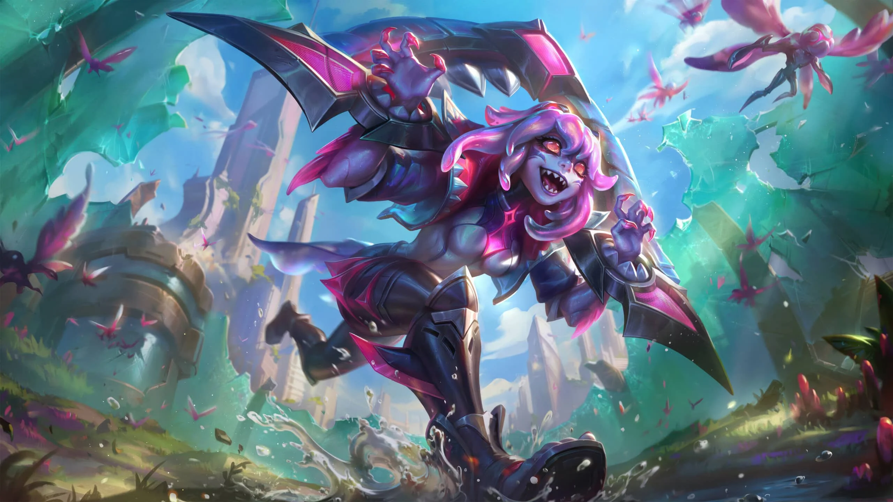

Historia de Briar
Hacia el final de su reinado, el general Boram Darkwill encargó a la Rosa Negra y su legión de hemomantes la creación de un arma viviente, única en su tipo. A diferencia de los experimentos anteriores realizados en cadáveres, esta nueva criatura nacería de la sangre misma, alimentándose de ella y desarrollando un instinto de caza inagotable.
Así fue como nació Briar, una asesina creada para cumplir una misión, pero cuyo apetito insaciable la llevó a un primer intento desastroso y sangriento. Reconociendo el peligro que representaba, la RN decidió mantenerla viva pero controlada, inventando un cepo especial cerrado con una gema de hemolito que calmaba su mente.
Durante el golpe de Jericho Swain contra Darkwill, Briar fue liberada momentáneamente del cepo por su encargado, pero en lugar de seguir órdenes, devoró a todos a su alrededor, menos a Swain, quien logró escapar. Finalmente, los guardias de Swain lograron recapturarla y devolverla a su prisión.

En la soledad de su celda, Briar luchaba contra el hambre, debilitándose sin sangre fresca. Las voces de otros prisioneros, que clamaban por sangre, la atormentaban, pero pronto descubrió que la monotonía de sus lamentos era aún más torturante que la falta de comida.
Con el tiempo, Briar comenzó a reflexionar sobre su situación y su deseo de equilibrio entre estar bajo control y estar libre. Un día, al jugar con el cepo, descubrió cómo aflojar el hemolito y, aprovechando la distracción de los guardias, logró escapar.
Ahora libre, Briar explora las calles de Noxus con su cepo aún cerrado, pero con la libertad de abrirlo cuando desee. Mientras se adapta al mundo exterior bajo la vigilancia de la RN, Briar aprende y descubre nuevas facetas de la vida que tanto anhelaba experimentar.

Habilidades de Briar
Pasiva - Maldición carmesí

Briar obtiene curación adicional según la vida que le falte. Además, sus ataques y habilidades aplican acumulaciones de sangrado durante un breve periodo de tiempo. El sangrado inflige daño físico según la cantidad de acumulaciones y cura a Briar un porcentaje del daño premitigado. Briar no tiene regeneración de vida básica y sus habilidades le cuestan vida.
Q - A la yugular

Briar se abalanza contra su objetivo, lo aturde durante un breve periodo, le inflige daño físico y reduce su armadura. Briar dejará de priorizar a campeones si lanza esta habilidad contra un súbdito o monstruo durante Frenesí sanguinario.
W - Frenesí sanguinario

Briar salta a una ubicación y entra en un estado de Frenesí sanguinario, provocándose a sí misma para atacar al enemigo más cercano (priorizando a los campeones) durante un tiempo. Mientras dure Frenesí sanguinario, obtiene velocidad de ataque y velocidad de movimiento. Además, sus ataques infligen daño físico en torno al objetivo principal. Briar puede reactivar esta habilidad para potenciar su siguiente ataque. Inflige daño físico según la vida que le falte y se cura un gran porcentaje del daño infligido.
E - Alarido escalofriante

Inicio de la carga: Briar se deshace de Frenesí sanguinario y reúne energía, lo que reduce el daño que recibe y recupera vida. Lanzamiento: Briar emite un alarido que inflige daño según el tiempo de carga y ralentiza durante un breve periodo. Con la carga al máximo, el alarido empuja, lo que inflige daño adicional a los enemigos golpeados que choquen contra un muro y los aturde.
R - Final sangriento

Briar lanza un hemolito y salta hasta la ubicación del primer campeón golpeado, lo que lo marca y lo convierte en su presa. Al aterrizar, inflige una gran cantidad de daño físico a quienes haya cerca y hace que los enemigos huyan. Entra en un Frenesí sanguinario potenciado y persigue a su presa hasta que uno de los dos muera. Durante dicho periodo, obtiene armadura, resistencia mágica y velocidad de movimiento adicional.
Galería de Skins de Briar

Skin Base

Skin Demonios Callejeros

Skin Escuadrón Animalia